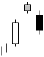

تحلیل تکنیکال
الگوهای کندل استیک ها
الگوهای برگشتی نزولی
Evening Star

الگوی ستاره عصرگاهی از مجموع سه شمع در انتهای روند صعودی تشکیل می شود شمع اول صعودی و پرقدرت، شمع دوم
با شکاف (گپ) صعودی آغاز شده و بدنه آن میتواند نزولی یا صعودی باشد ولی در غالب موارد بدنه و سایه های بزرگی ندارد و
شمع سوم یک شمع نزولی است که آغاز آن با شکاف (گپ) نزولی نسبت به شمع دوم آغاز شده است. این سه شمع اخطار
روند نزولی را در انتهای روند صعودی اعلام می نمایند.